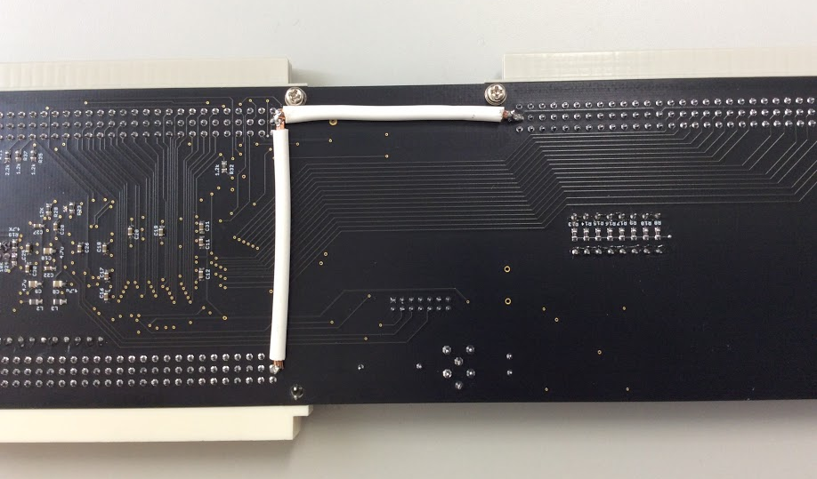
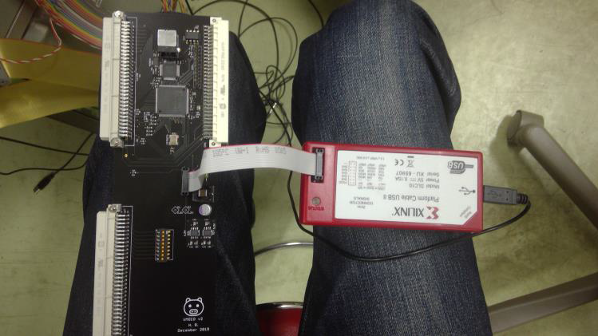
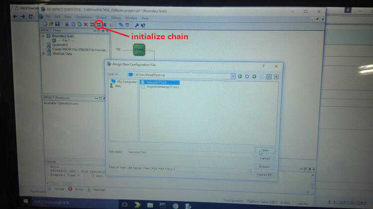
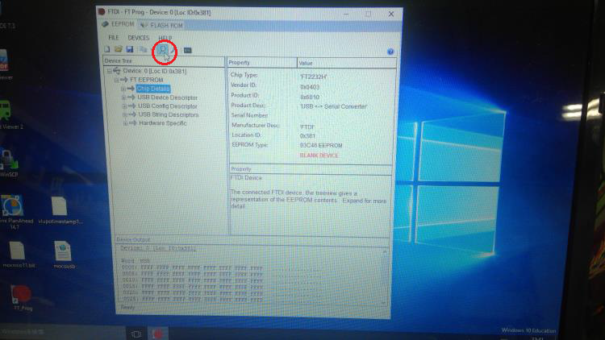
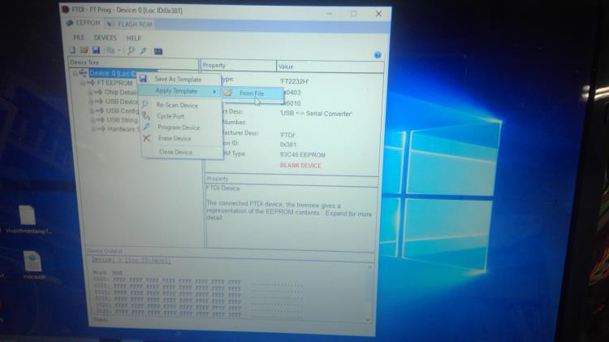

DAQ/MOCO/MOCOの準備
概要
新品のMOCOボードを使う際に必要な手順と配線について
手順
- 電源ラインの強化
- MOCOの電源ラインは割と弱いので使うモジュールによっては強化が必要
- こんな感じ

- FPGAの書き込み
- XilinxのFPGAライターをMOCOに接続し、MOCOをVMEクレートに差して電源を入れる
 - ISE Webpack 14.7 を Xilinx のページからダウンロードしインストール (Windows PC)
- Spartan-3AN 用のパッチをダウンロード(link)
- Zip を解凍し、パッチファイルをインストールディレクトリ(C:\Xilinx\14.7\ISE_DS\)に置く
- インストールされたISE Design Suite Command Promptを起動し、
>set MYXILINX=C:\Xilinx\14.7\ISE_DS\ISE_XCN14003_patch
>ISE\bin\nt\impact.exe
でISE impactを起動する - ribfdaqのページからmocosio11.bitをダウンロード
- FPGAライターとPCをUSB接続した状態で"initialize chain"ボタンを押す。
 - ダウンロードしたmocosio11.bitを選択し、"Open"を押す。
- 左下のウィンドウから"Program Flash and FPGA"をクリック
- 青色の"succeeded"が表示されれば終了
- XilinxのFPGAライターをMOCOに接続し、MOCOをVMEクレートに差して電源を入れる
- FTDI chipの書き込み
- ftdichip.comからFT_PROGをダウンロード
- MOCOのUSB端子とPCを接続した状態で"Scan and Parse"ボタンを押すと、FT2232Hが検知されるはず
 - ribfdaqのページからmocousb.xmlをダウンロード
- デバイスを右クリックし、"Apply Template" →"From File"からダウンロードしたmocousb.xmlを選択
 - 同じ右クリックメニューから"Program Device"をクリック
- 以上でMOCOはreadyになったはず。